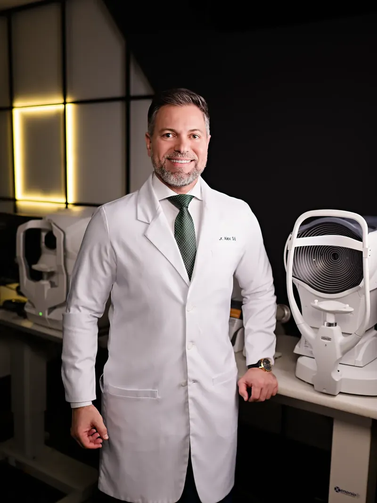
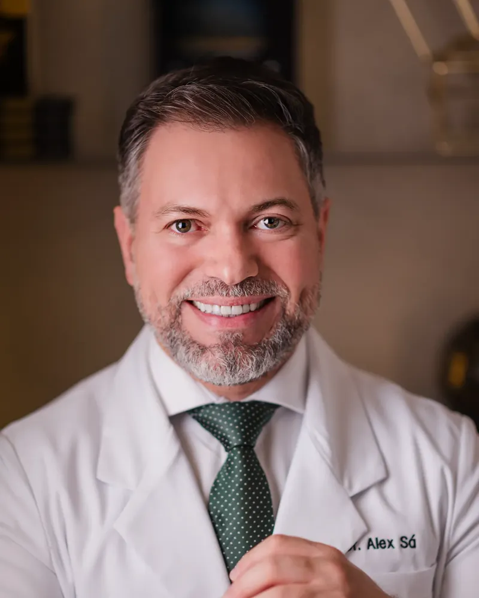

Encontro Grau Zero · aula ao vivo
Liberdade dos óculos: o que existe hoje
Uma aula ao vivo com o Dr. Alex Sá e 30 oftalmologistas do Brasil inteiro sobre os caminhos que existem hoje pra miopia, astigmatismo, hipermetropia, presbiopia (a vista cansada) e catarata. E por que a indicação é sempre individualizada.
- Ao vivo
- Online
- 60 minutos com perguntas

Dr. Alex Sá · CRM-AM 7516 · RQE 3514
Assista ao convite do Dr. Alex
Em poucos minutos ele explica o que você vai ver na aula do dia 24.
O que você vai entender na aula
Quatro caminhos que existem hoje. O que muda de um pro outro, e pra quem cada um costuma ser indicado.
-
Laser
Miopia, astigmatismo, hipermetropia e presbiopia (a vista cansada), pra quem depende do óculos o dia inteiro. Procedimento de minutos, com colírio anestésico, sem internação e com alta no mesmo dia.
-
Lente que entra dentro do olho
A estratégia pra quem tem grau alto e já ouviu que o caso dele não tem solução. Se existe indicação, é o exame que responde.
-
Troca do cristalino
Depois dos 40, o perto começa a sumir. É uma lente que nasce com a gente e para de funcionar, como uma lâmpada. A troca resolve a causa e ainda evita a catarata mais à frente.
-
Catarata
Esperar amadurecer era conselho de 30 anos atrás: quanto mais dura, mais difícil de operar. Existe lente que só tira a catarata e lente que tira a catarata e o óculos junto, e essa diferença quase ninguém explica antes.
Qual caminho serve pro seu caso, só o exame diz. Cada caso é um caso, e é isso que a avaliação responde. Na aula, você entende o que existe antes do exame.
O que a aula desmonta
Seis frases que você já ouviu, e o que a oftalmologia responde a cada uma delas hoje.
- Mito: Grau alto não opera.
- Verdade: Grau alto tem estratégia: a lente que entra dentro do olho.
- Mito: Depois dos 40 não dá mais.
- Verdade: Depois dos 40 é justamente quando o laser ou a troca do cristalino entram na conversa.
- Mito: Cirurgia de grau é demorada e arriscada.
- Verdade: O procedimento dura minutos, sem ponto, sem corte e sem internação.
- Mito: Catarata precisa amadurecer pra operar.
- Verdade: Esse conselho tem 30 anos. Quanto mais dura a catarata, mais difícil de operar.
- Mito: Catarata é só de idoso.
- Verdade: Catarata aparece em várias idades, inclusive na infância.
- Mito: Depois de operar continua de óculos.
- Verdade: A lente que entra no lugar pode corrigir o grau de longe e de perto, quando existe indicação.
Para quem é essa aula
- Usa óculos ou lenteVocê tem entre 18 e 45 anos, depende do óculos todo dia e já ouviu que o seu caso não tem jeito.
- Passou dos 40O perto começou a sumir, com ou sem multifocal, e você anda culpando o celular.
- CatarataVocê tem catarata diagnosticada, ou a suspeita ficou no ar depois da última consulta.
- Filho ou cuidadorVocê cuida de alguém com catarata e quer entender as opções antes de qualquer decisão.
- Só quer entenderVocê quer saber o que existe hoje antes de marcar exame, consulta ou qualquer outra coisa.
Se você se reconheceu em um deles, a aula é pra você.
Como funciona
-
1
Entra no grupo
O botão desta página leva direto pro grupo do WhatsApp do encontro.
-
2
Recebe os conteúdos e os avisos
Até o dia 24 chegam três conteúdos curtos e o lembrete da aula.
-
3
Assiste ao vivo dia 24, às 20h, horário de Brasília
O link da transmissão é publicado no grupo. Você assiste pelo celular e pergunta por texto.
No grupo, só o Dr. Alex e a equipe publicam. Você não recebe mensagem de ninguém além deles.

Quem apresenta
Dr. Alex Sá
CRM-AM 7516 · RQE 3514
Cirurgião oftalmologista, especialista em catarata e cirurgia refrativa, à frente da Clínica Dr. Alex Sá, em Manaus.
Foi professor da Universidade Federal do Amazonas por seis anos e é preceptor do fellowship em cirurgia de catarata do Hospital Universitário Getúlio Vargas, onde ajuda a formar outros cirurgiões. Autor do livro "Cirurgia de Catarata: habilitando-se para o aprendizado".
No Encontro, ele reúne 30 oftalmologistas do Brasil inteiro, colegas que atendem em diferentes cidades e estados.
Perguntas frequentes
É gratuito mesmo?
É online? Preciso instalar alguma coisa?
Vou sair da aula sabendo se o meu caso tem solução?
Sou de outra cidade. Vale a pena?
Preciso ligar a câmera ou falar?
Dia 24, às 20h, horário de Brasília. Entra no grupo e recebe o link.
A aula é ao vivo e online. O link da transmissão é publicado no grupo do WhatsApp, junto com os avisos até o dia 24.
24 de setembro · quinta · 20hhorário de Brasília
Aula educativa e gratuita. Não substitui consulta, exame ou avaliação médica.